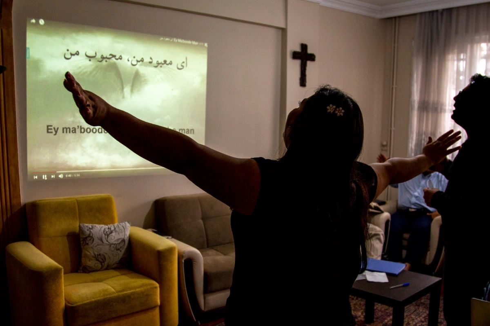

동아시아
외국인 주둔이 어려운 곳에서 현지 리더와 함께합니다.
우리는 누구인가
NAP는 이미 사역하고 있는 현지 리더를 지원합니다. 외부 팀이 와서 사역을 가져가거나 새 프로그램을 시작하기보다, 격려·훈련·실질적 자원으로 현지 사역이 자라도록 돕습니다.
외국인 사역자에게 문이 닫힌 곳에서도 토착 지도자는 떠나지 않았습니다. 그들은 세대에 걸쳐 이어진 사역을 이어 갑니다. 위험을 키우는 외부 주둔 대신, 이미 현장에 있는 성도와 직접 동역합니다.
이야기 더 보기
왜 중요한가
외국인 사역자가 제한 지역을 떠날 때 공백이 생긴 것이 아닙니다. 가장 잘 감당할 현지 리더에게 사역이 맡겨졌습니다.
현지 파트너가 사역의 주체가 되어, 수십 년의 복음 사역이 자기 공동체 안에서 이어지게 합니다.
남겨진 것을 다시 시작하거나 바꾸지 않습니다. 현지 리더가 지경을 넓힐 때 뒤에서 지지합니다.
외부 주둔이 아니라 맡겨진 현지 리더를 세우기에, 사역은 어떤 변화 속에서도 자생적으로 이어질 수 있습니다.
NAP의 특별함
현지 리더는 우리보다 먼저 이 일을 해 왔습니다. 우리는 가로채지 않고, 이미 일어나는 일을 강화합니다.
현지 리더는 사역을 유지하는 데 그치지 않고, 새 리더를 세우고 아시아와 세계로 팀을 파송합니다.
한 번의 거래가 아닙니다. 신뢰와 헌신, 같은 부르심 위에 동역합니다.
한 줄로: NAP는 아시아 제한 지역의 최전선 리더를 위한 지원 체계입니다. 훈련과 도구, 뒷받침으로 현지 사역이 오래가도록 돕습니다.
사역 지역
제한되고 접근이 어려운 곳에서 현지 파트너와 동행합니다. 이 사이트에는 도시나 사역 주소를 올리지 않고, 넓은 지역만 나눕니다. 사람들의 안전을 위해서입니다.
외국인 주둔이 어려운 곳에서 현지 리더와 함께합니다.
이미 언어와 문화를 아는 교회와 파송 파트너를 지원합니다.
접근이 어려운 공동체에서 이웃을 섬기는 현지 사역자를 뒷받침합니다.
훈련과 돌봄, 장기적 힘을 위해 토착 파트너와 동행합니다.
어떻게 돕나
각 사역 페이지에 짧은 소개가 있고, 자세한 영문 설명과 예산은 영문 페이지에서 볼 수 있습니다.
연락
동역과 사역, 후원에 관한 질문을 환영합니다. 공개 이메일은 곧 추가될 예정입니다. 후원 관련 문의는 Tithely 기부 양식의 지원을 이용해 주세요.
Tithely로 후원